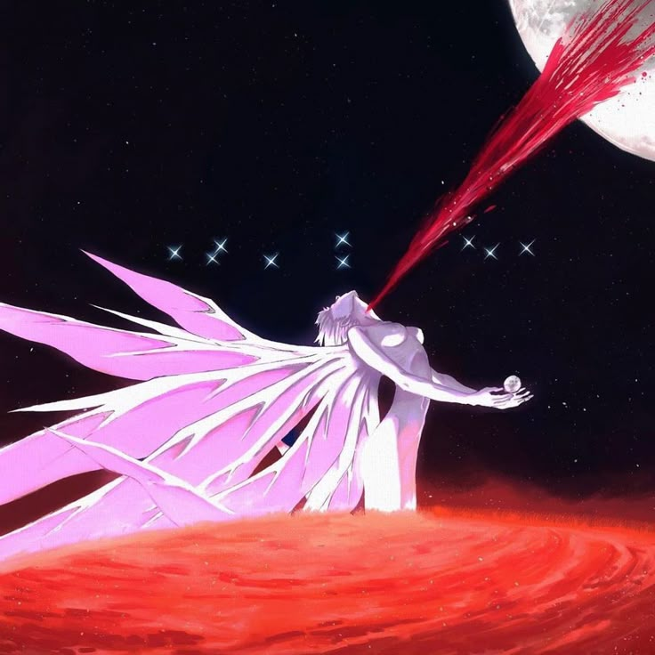
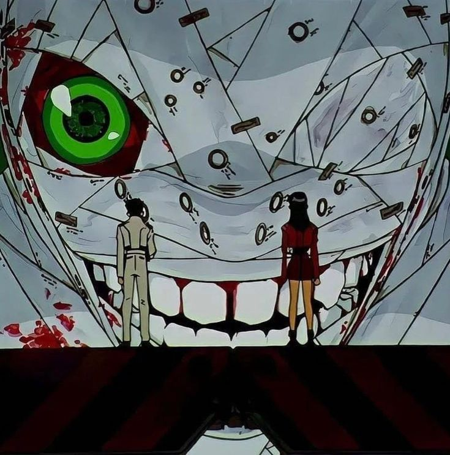
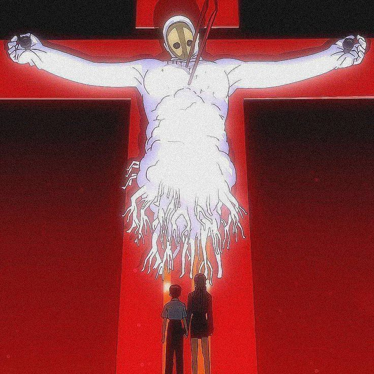

O filme funciona como um final alternativo e mais explícito para a série Neon Genesis Evangelion. A história acompanha Shinji Ikari enquanto a organização NERV entra em colapso após um ataque militar promovido pela SEELE.
Enquanto batalhas intensas acontecem envolvendo os EVAs, Shinji enfrenta um profundo conflito emocional e existencial. Ao mesmo tempo, SEELE inicia o chamado “Projeto de Instrumentalidade Humana”, um plano para fundir toda a humanidade em uma única consciência, eliminando a dor e a solidão individuais.
No centro da história, Shinji precisa decidir entre aceitar essa fusão abandonando sua individualidade ou rejeitá-la e continuar vivendo como um ser humano separado, com todas as dificuldades que isso implica.
Shinji vivencia uma realidade psicológica intensa e acaba tendo o poder de decidir o destino da humanidade. Ele rejeita a fusão completa, permitindo que as pessoas possam existir novamente como indivíduos.



volte para a pagina inicial